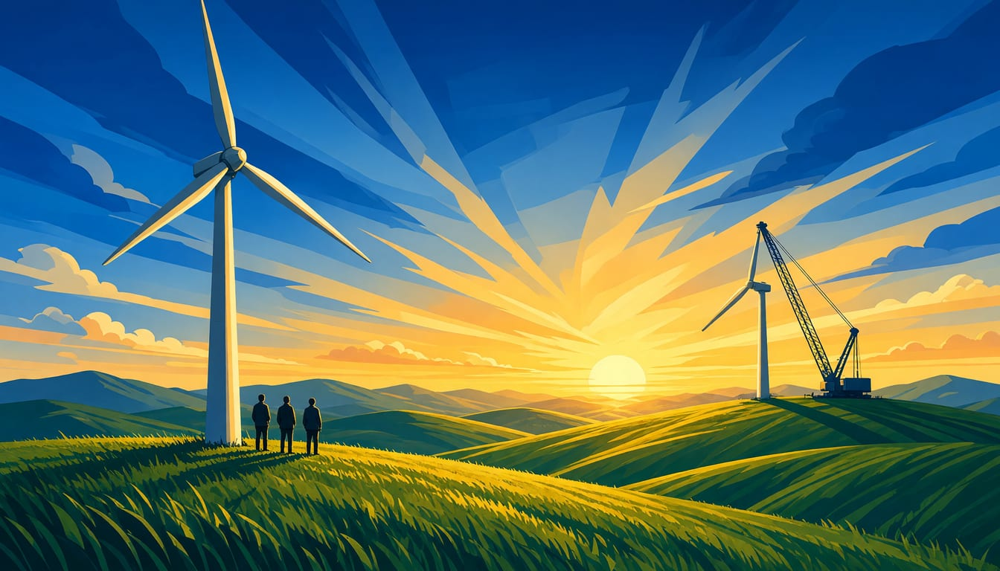

Opinion
Siemens Energy is fixed. Now let the wind set the pace of the payout
Gamesa has only just cleared break-even, with a 0 to 2 percent margin expected for 2027. Full-speed buybacks through 2030 would hand investors the reward while the wind ramp, and the €164 billion backlog, still wait for the cash.

Siemens Energy bought back €3.1 billion of its own shares in fiscal 2026, and plans buybacks of up to €9 billion more through 2030. That bet has paid off. This month the group reported a record fiscal 2026, and Gamesa broke even, with €8 million of profit before special items. The verdict is on the table: Europe's wind champion is fixed. So our position is simple. Siemens Energy should let the wind turn-around, not the payout ratio, set the pace of its buybacks.
Siemens Energy stands on solid ground, and the shareholders who carried the risk deserve their say. Those who want the buyback at full pace say the reward is earned: net income more than doubled to just over €4.1 billion, free cash flow nearly doubled to €8.8 billion, and the margin before special items leapt 640 basis points to 12.4 percent. Hold the payout back, they say, and you punish the very investors who financed the turn-around, and tell the market management doubts its own 2030 targets. We agree with the payment. The pace is another matter. The board's own targets say the job is not done: Gamesa cut its losses by €1.5 billion and finally posted two quarters in the black, but that break-even figure is thin, nothing more, and the division still expects a margin of 0 to 2 percent for 2027. Meanwhile the orders pour in elsewhere: €68.1 billion of new orders, up 18.8 percent, a book-to-bill of 1.54, and a record backlog of €164 billion. €8.8 billion of cash flow funds the wind ramp and the shareholders too.
Now look at 2030, the year the board's own targets fall due.
By 2030, Siemens Energy targets a margin before special items of 20 to 22 percent and compound revenue growth of 12 to 14 percent. The company also expects gas turbine demand running at 140 to 150 gigawatts a year, and about €15 billion of the backlog comes from data centres. Picture who will earn those margins. CFO Maria Ferraro says the company is aiming higher for 2027 and 2030. The market marks the same path: analysts expect Gamesa to work its way up to a margin of about 2.7 percent. That climb is what your payout will ride through. The buybacks as planned would leave the group reaching 2030 with its margins made in combustion and its clean-power division still thin. Sequence it instead: full speed once Gamesa clears that 2.7 percent, slower while it sits below, and the freed cash goes into the wind ramp and grid capacity. Nothing has to be cut. Only the order has to be right.
Europe wants energy that is cheap, clean and its own, and one group holds wind, grids and turbines together. CEO Christian Bruch said the company is now seeing the fruits of a very successful year, and the fruits are real. Aim higher in order as well as size, then. Sequencing needs no rule changed. It needs a board that writes it into the capital-allocation plan. The demand is this: Supervisory Board, put the wind-linked buyback into the plan you bring to the next AGM. Shareholders, vote for the payout only with that line in it. You did not carry this turn-around to watch it become an exit. Ask one thing of your board: pay us as the wind turns, not before.